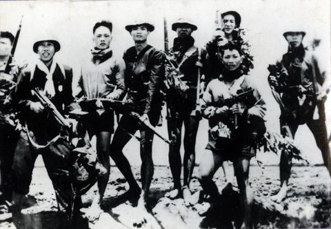

VIỆT NAM
THỜI BÁO
CON NGƯỜI LÀ NGUỒN LỰC VÀ MỤC TIÊU
CỦA SỰ NGHIỆP CÁCH MẠNG
Nghiên cứu quan niệm toàn diện về con người, xây dựng con người mới "vừa hồng vừa chuyên"
QUAN NIỆM TOÀN DIỆN VỀ CON NGƯỜI TRONG TƯ TƯỞNG HỒ CHÍ MINH
Trong hệ thống tư tưởng Hồ Chí Minh, lý luận về con người chiếm vị trí đặc biệt quan trọng, vừa mang tính khoa học sâu sắc vừa chan chứa tinh thần nhân văn cao cả. Người không nhìn nhận con người một cách trừu tượng, chung chung mà xem xét con người thực tiễn, gắn với bối cảnh lịch sử cụ thể.
Theo giáo trình, con người được nhìn nhận như một chỉnh thể thống nhất về . Sự phát triển hài hòa giữa đời sống vật chất và tinh thần, giữa tri thức, đạo đức và sức khỏe thể chất là nền tảng hình thành nhân cách toàn diện.
Đồng thời, Hồ Chí Minh khẳng định con người không phải là , mà là sản phẩm của các mối quan hệ xã hội từ gia đình, tộc họ đến giai cấp và dân tộc. Con người vừa là sản phẩm của lịch sử, vừa là chủ thể sáng tạo ra lịch sử.
Người nhấn mạnh: Con người vừa là , vừa là nhân tố trung tâm của mọi chính sách phát triển.
Giải phóng con người khỏi mọi ách áp bức, bất công là ước vọng cháy bỏng của Người: "Tôi chỉ có một sự ham muốn, ham muốn tột bậc, là làm sao cho nước ta được hoàn toàn độc lập, dân ta được hoàn toàn tự do, đồng bào ai cũng có cơm ăn áo mặc, ai cũng được học hành". Do đó, con người không phải là mà chính là nhân tố quyết định mọi thành bại.

TƯ TƯỞNG HỒ CHÍ MINH VỀ NGUỒN LỰC CON NGƯỜICHIẾN LƯỢC "TRỒNG NGƯỜI" — VỪA HỒNG VỪA CHUYÊN
Hồ Chí Minh luôn đánh giá cao vai trò nhân tố con người. Trong mọi công cuộc kiến thiết quốc gia, Người xem con người không phải là mà là nhân tố quyết định nhất, là vốn quý nhất của xã hội.
Xây dựng con người mới không phải là mà là công việc chiến lược mang tính quy luật. "Vì lợi ích mười năm thì phải trồng cây, vì lợi ích trăm năm thì phải trồng người".
Nội dung xây dựng con người toàn diện được Hồ Chí Minh khái quát gọn gàng là . Trong đó, "Hồng" là đạo đức cách mạng, lòng yêu nước, trung với Đảng, hiếu với dân; "Chuyên" là trình độ chuyên môn, năng lực khoa học kỹ thuật và tinh thần sáng tạo.
Học tập và làm theo tư tưởng Hồ Chí Minh về con người là chìa khóa vàng để phát huy tối đa nhân tố con người Việt Nam trong thời kỳ đổi mới và hội nhập quốc tế.
BỐN PHẨM CHẤT ĐẠO ĐỨC CỐT LÕI
• CẦN, KIỆM: Siêng năng, lao động có kế hoạch, tiết kiệm thời gian và của công.
• LIÊM, CHÍNH: Trong sạch, không tha hóa, chí công vô tư, để việc công lên trên việc tư.
KIỂM CHỨNG